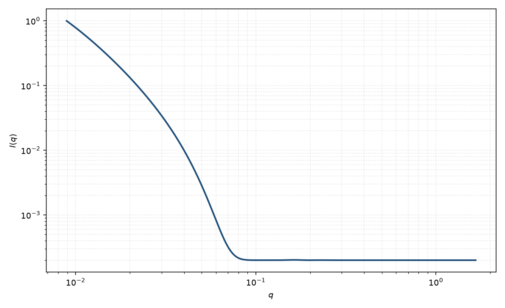

核壳分形
fractal core-shell
适用场景
致密核外面是分形冠状（胶束、吸附聚合物、部分溶剂化的聚集体）时，把核的球振幅与分形壳的 Teixeira 关联合在一起。核衬度与壳衬度通常不同。
无致密核时用星形聚合物或质量分形。壳是均匀密壳时用核壳球。
物理图像
核给出 Rayleigh 振幅；壳的质量按分形排列，相关由 $S(q)$ 描述。交叉项让核–壳干涉出现在中间 $q$。
取向对球核平凡。磁性核加非磁分形壳时，磁通道接近均匀球，核通道才看见冠状。
示意图

核心公式
出发点
致密核的振幅是球体积内平面波的积分；壳层单体按分形对关联 $r^{D-3}\mathrm{e}^{-r/\xi}$ 排列。总振幅是核与壳之和，强度含核–核、壳–壳与核–壳交叉项。壳–壳项带 Teixeira 结构因子。
推导
核（均匀球，半径 $R_{\mathrm{c}}$）
$$F_{\mathrm{c}}(q)=\Delta\rho_{\mathrm{c}}V_{\mathrm{c}}\,\Phi(qR_{\mathrm{c}}),\qquad\Phi(x)=\frac{3(\sin x-x\cos x)}{x^3}.$$壳振幅 $F_{\mathrm{s}}$ 是壳内衬度分布的 Fourier 变换。壳内单体对关联给出 $S_{\mathrm{shell}}(q)$（Teixeira，$D$ 为冠状维数，建造块尺度小于壳厚）。相干叠加
$$I(q)\propto \lvert F_{\mathrm{c}}(q)+F_{\mathrm{s}}(q)\rvert^2 S_{\mathrm{shell}}(q)+B$$是常用包络：交叉项 $2\mathrm{Re}(F_{\mathrm{c}}^*F_{\mathrm{s}})$ 在中间 $q$ 产生核–壳干涉。无致密核时 $F_{\mathrm{c}}=0$，回到分形页；壳若均匀密实，$S_{\mathrm{shell}}\to 1$，回到核壳球。
低 $q$ 与渐近
低 $q$：$F_{\mathrm{c}}+F_{\mathrm{s}}\to\Delta\rho_{\mathrm{c}}V_{\mathrm{c}}+\Delta\rho_{\mathrm{s}}V_{\mathrm{s}}$，整体 Guinier 半径由核加冠状的二阶矩决定，通常大于 $R_{\mathrm{c}}$。中间区壳的 $S_{\mathrm{shell}}\sim q^{-D}$。高 $q$ 看见核界面或壳建造块，光滑核给出振荡并趋向 $q^{-4}$。
参数表
| 参数 | 符号 | 含义 | 单位 | 典型范围 |
|---|---|---|---|---|
| 核半径 | $R_{\mathrm{c}}$ | 致密核半径 | Å | 10–200 Å |
| 壳分形维数 | $D$ | 冠状质量维数 | 无量纲 | $1$–$3$ |
| 壳截断 | $\xi$ | 冠状整体截断 | Å | 大于核半径 |
| 核 / 壳衬度 | $\Delta\rho_{\mathrm{c}},\Delta\rho_{\mathrm{s}}$ | 相对溶剂的 SLD 差 | Å$^{-2}$ | 对比实验可分离 |
| 标度 / 本底 | $\mathrm{scale}$, $B$ | 前置因子与常数本底 | 与强度单位一致 | 实验相关 |
拟合注意
取向：球核无取向。冠状若被剪切拉长，应改用椭球核或柔性链模型。
多分散核半径强烈改变干涉极小，与 $D$ 相关。磁性：磁核半径不必等于核 $R_{\mathrm{c}}$。
可辨识性：核壳衬度与 $D$ 交换会给出几乎相同的中间斜率。对比变化或已知核组成才能拆开。
相近模型
参考文献
- Teixeira, J. J. Appl. Cryst. 1988, 21, 781–785. DOI: 10.1107/S0021889888001990
- Chen, S.-H.; Teixeira, J. Structure and fractal dimension of protein-detergent complexes. Phys. Rev. Lett. 1986, 57, 2583–2586. DOI: 10.1103/PhysRevLett.57.2583